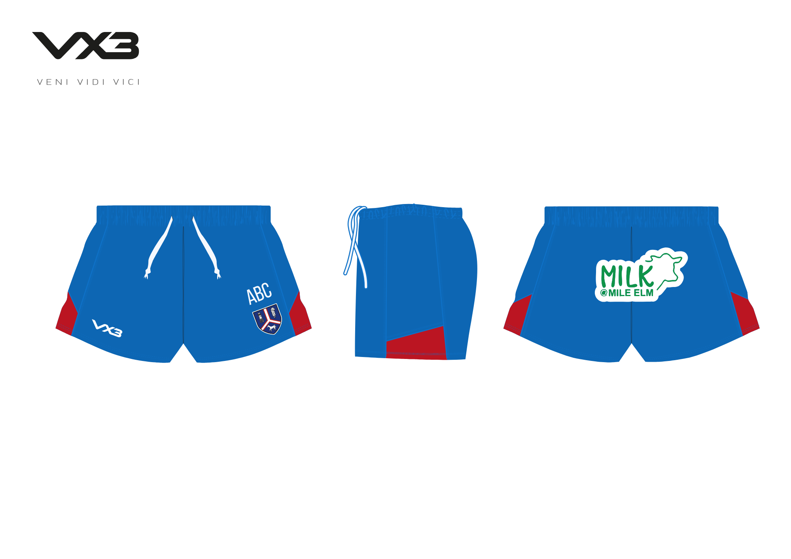
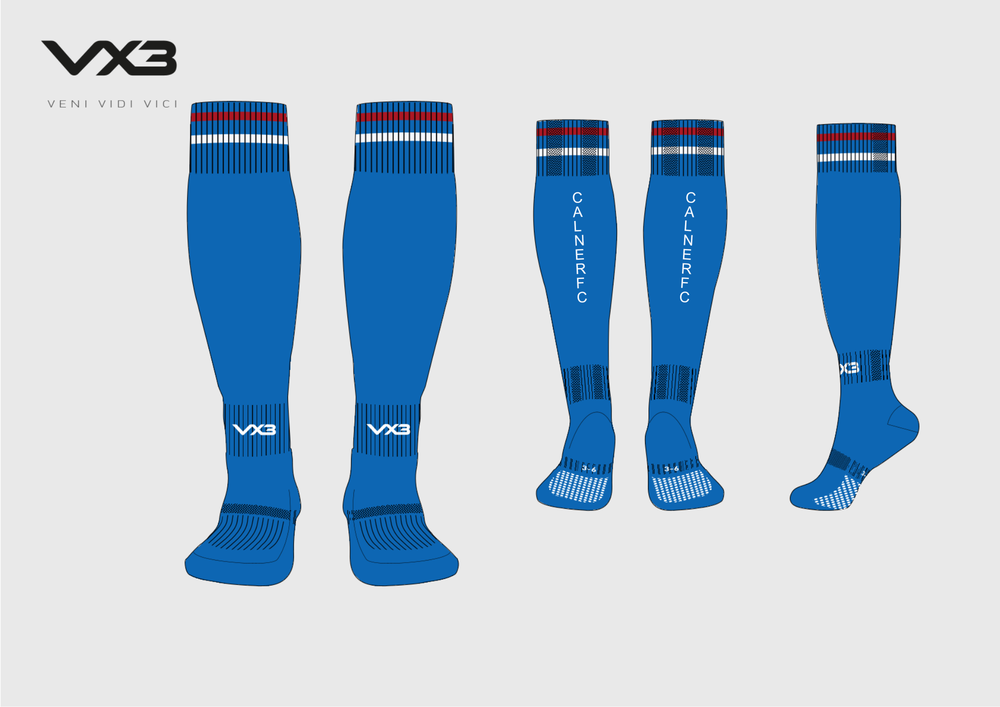
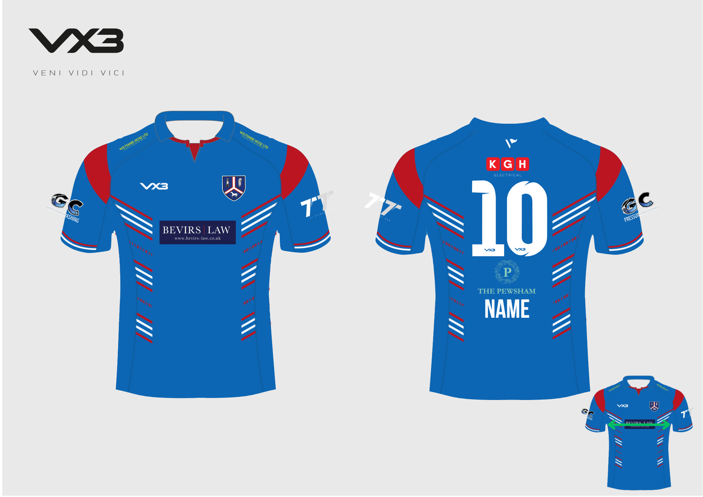
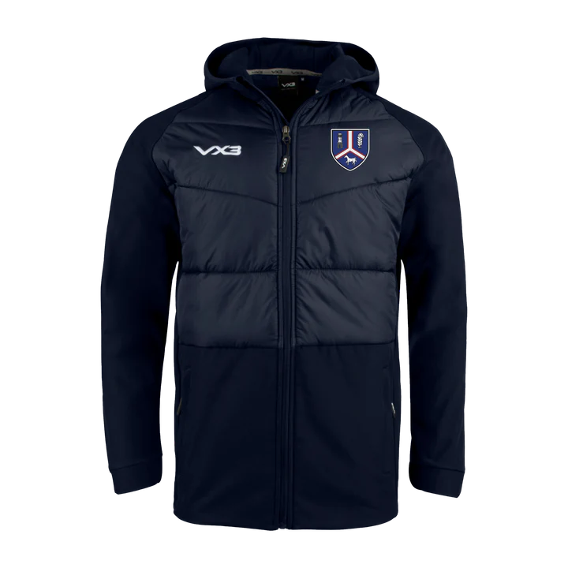
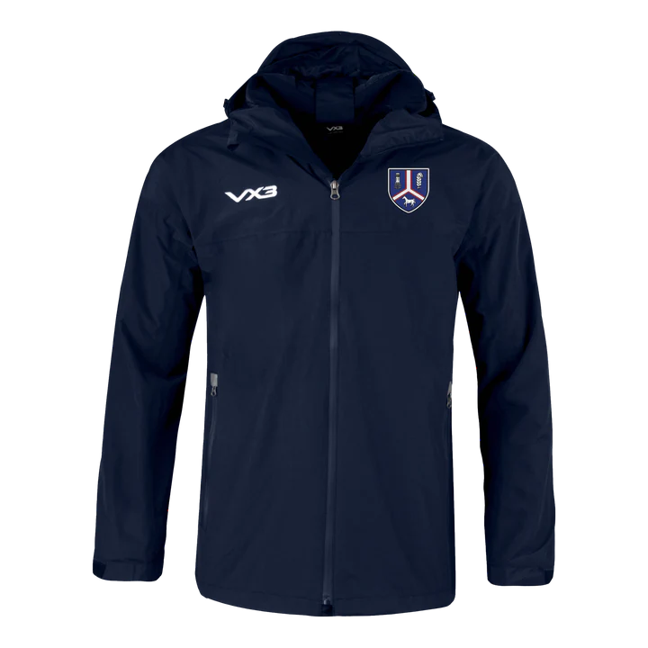
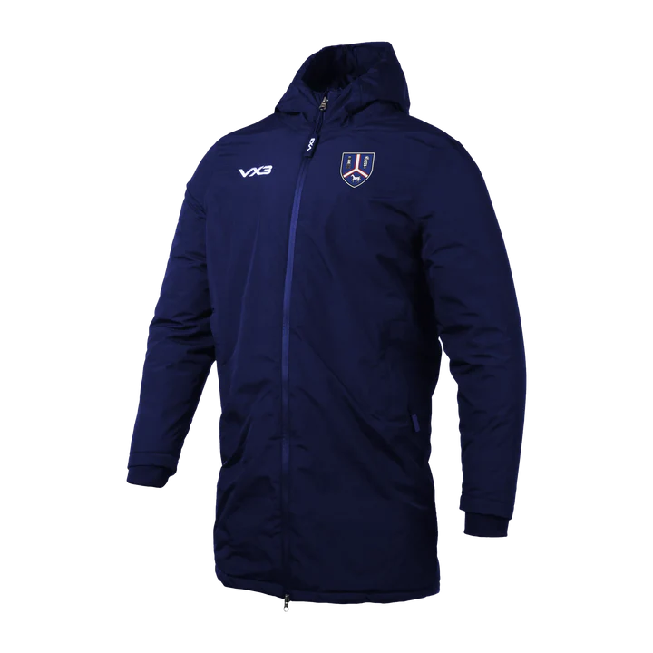
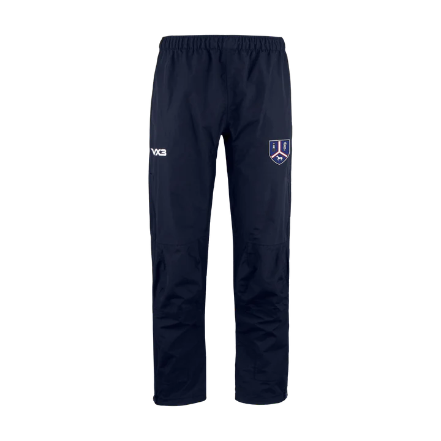
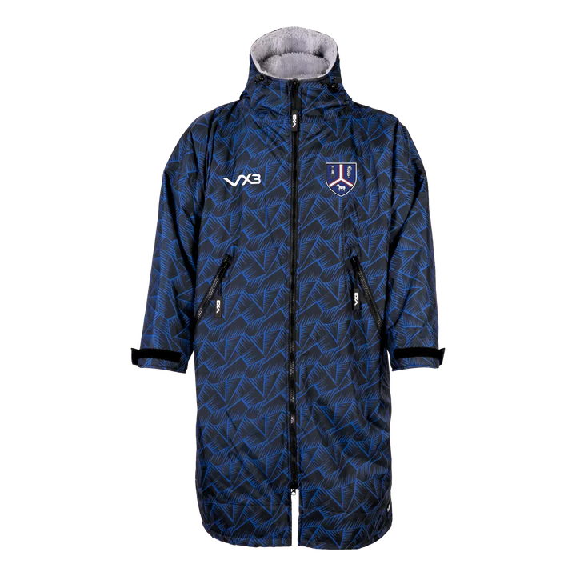
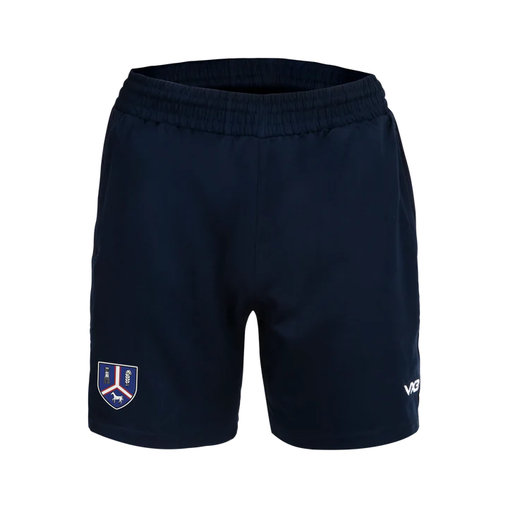

As part of the standard match kit, all players are expected to have their own Calne Rugby shorts and socks. These items are essential for match days to ensure consistency, team identity, and compliance with club standards.
Please ensure you include these items in your order if you do not already have them.

Calne RFC Elite Playing Shorts
£23.00

Calne RFC Playing Socks
£10.00
Calne RFC Elite PRO-FIT Playing Shirt
Calne 2025/26 Elite PRO-FIT Playing Shirt (Tight fitting)
Please note: Shirt measurements provided are taken armpit-to-armpit, not the usual chest circumference. Please measure a similar shirt laid flat from armpit to armpit to select the correct size. (Green arrow in the bottom corner)
£37.50

Calne RFC Replica FIT Playing Shirt
Calne 2025/26 Replica FIT Playing Shirt (Loose fitting with collar)
Please note: Shirt measurements provided are taken armpit-to-armpit, not the usual chest circumference. Please measure a similar shirt laid flat from armpit to armpit to select the correct size. (Green arrow in the bottom corner)
£37.50
After Match
All players are expected to wear the official after-match shirt following every home game. This is an important part of representing Calne Rugby Club both on and off the field.
We’re proud to have The Pewsham as a key sponsor, whose generous support plays a vital role in the success of our club. Their logo is featured on the after-match shirts, wearing this shirt after home games is compulsory for all players.
Please ensure you include one in your order if you do not already have one.
Calne RFC After-Match Shirt
£25.00
Training Kit
Our Calne Rugby training kit is designed to offer comfort and performance during all training sessions. This includes items such as training tops, shorts, and base layers — suitable for all levels and conditions.
While the training kit is not compulsory, we encourage players to wear club-branded kit to training as it helps promote team identity and professionalism across the club.
Calne RFC Primus Smock
£28.00
Calne RFC Fortis Vest
Stay Cool through those high energy sessions in the Fortis Training Vest.
£20.00
Calne RFC Fortis Tee
Power on through those high, energy absorbing sessions in this training t-shirt.
£23.00
Leisure Wear
Our range of Calne Rugby leisure wear is designed for comfort, style, and showing off your club pride outside of training and match days. This includes items such as hoodies, polos, tracksuit bottoms, and jackets — perfect for travelling to fixtures, relaxing post-match, or wearing around town.
Leisure wear is entirely optional and not part of the compulsory kit, but it's a great way to look the part and feel part of the club community.
Calne RFC Fortis Polo
Crafted with a folded collar and 2 button fastening placket, these tops feature short sleeves to give off that classic look.
£23.00
Calne RFC Fortis Hoodie
Comfort and warmth are key and this top provides both. Designed with a brushed fleece lining this hoodie is perfect for those colder training and travelling days.
£39.00
Calne RFC Fortis Quarter Zip Sweat
Developed with wicking technology that sweeps sweat away from the skin, this quarter zip top is perfect for training or travelling in.
£35.00
Calne RFC NAVY Primus Quarter Zip
The navy quarter zip is made from a soft, stretchy and breathable fabric, this multi-use 1/4 zip is both functional is use and professional in look. The navy quarter zip is the perfect Quarter Zip for off and on the field. The fabric hugs the body but allows for full, unrestricted movement.
£32.00
Calne RFC Royal Primus Quarter Zip
The royal quarter zip is made from a soft, stretchy and breathable fabric, this multi-use 1/4 zip is both functional is use and professional in look. The royal quarter zip is the perfect Quarter Zip for off and on the field. The fabric hugs the body but allows for full, unrestricted movement.
£32.00
Cold Weather
The Cold Weather Kit includes optional items designed to keep players warm and comfortable during the winter months. This range may include thermal base layers, hats, snoods, and mid-layer tops — all suitable for training and warm-ups in colder conditions.
While none of these items are compulsory, they are highly recommended to help players stay prepared and perform at their best throughout the season.
Calne RFC Ventus Gilet
The Ventus Gilet is our Spring/Autumn jacket designed to keep your core insulated when temperatures are slightly warmer.
£50.00

Calne RFC Tempest Hybrid Jacket
The Tempest hybrid jacket is our variable weather jacket designed to protect against the elements; keeping you warm and dry.
£55.00

Calne RFC Protego Waterproof Jacket
The Tempest hybrid jacket is our variable weather jacket designed to protect against the elements; keeping you warm and dry.
£90.00

Calne RFC Nero Managers Jacket
Introducing the Nero Managers Jacket by VX3 –Crafted to keep you at the top of your game. This knee-length jacket boasts unparalleled technical features. Stay dry and comfortable with its fully waterproof design, while the integrated insulation ensures warmth even in the harshest conditions.
£100.00

Calne RFC Protego Waterproof Trousers
These trousers are lightweight and pack down easily to fit into your kit bag making it convenient to always keep with you. The thigh length side zips make putting them on quick and easy. This product goes perfectly with our Protego Jacket so you can stay dry from head to toe.
£35.00

Calne RFC Duro Elite Sports Robe
The robe is oversized so that athletes can comfortably change within it – if you are using the Sports Robe for purely recreational purposes, please select a size down from the recommended size.
For any athlete operating outdoors, The Duro Sports Robe is a must have.
From open-water swimmers coming out of the water, to players coming off the pitch, slipping into the Duro Sports Robe is quickest way to get warm and dry.
£115.00
Gym Shorts and Leggings
This section includes gym shorts and leggings designed for strength & conditioning sessions, indoor training, and general fitness work. These items are made for flexibility, comfort, and support during high-movement activities.
While not compulsory, they are a popular choice among players who regularly take part in gym sessions or want versatile training gear to complement their rugby kit.

Calne RFC Majester Training Short
A day to day practical short that can be used on the training field as well as the classroom. Our breathable, crease resistant ProFIT fabric is smart and functional with zip pockets perfect for keeping your valuables safe.
£23.00
Calne RFC Primus Travel Short
These breathable shorts will keep the wearer cool and dry as the workout gets harder and higher in intensity. In a regular fit, these shorts are a comfortable balance between loose and snug. They come with 2 pockets and an adjustable elastic drawcord waistband which provides the perfect fit.
£23.00
Calne RFC Ludus Gym Shorts
Our lightweight, breathable ProFIT fabric makes for a comfortable and ultra-functional short. This design is more fitted than the other shorts in our range.
£23.00
Calne RFC Braca Trackpant
A modern, tapered fit for the classic track pant. This 2-layer track pant is a must for training and match days.
The inner lining is a combination of a soft cotton upper with a silky nylon from the knee down. The outer is our lightweight but durable ProFIT material which helps to retain warmth but allow breathability.
£37.00
Extras
This section includes a selection of useful extras to complete your kit. Items such as the Calne Rugby kit bag and club beanie hats are available for those who want practical and stylish additions to their rugby gear.
These items are optional, but they’re great for keeping your kit organised and staying warm on the sidelines or around town.